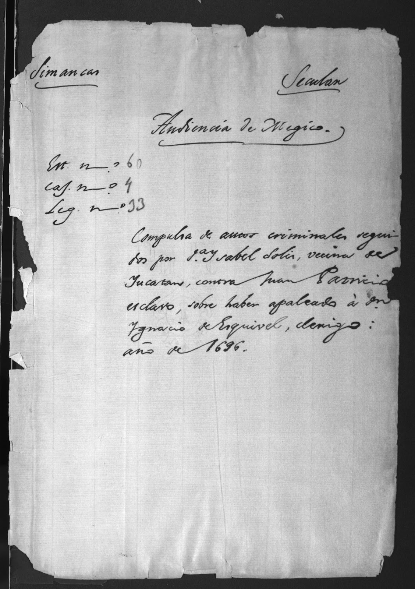

On Dispossession
Ante-Possessive Lives in the Americas
Black and Indigenous social relations confront racial capitalism across two legal histories at the turn of the eighteenth century.


Archival image · 1696 certified copy of proceedings against Juan Patricio